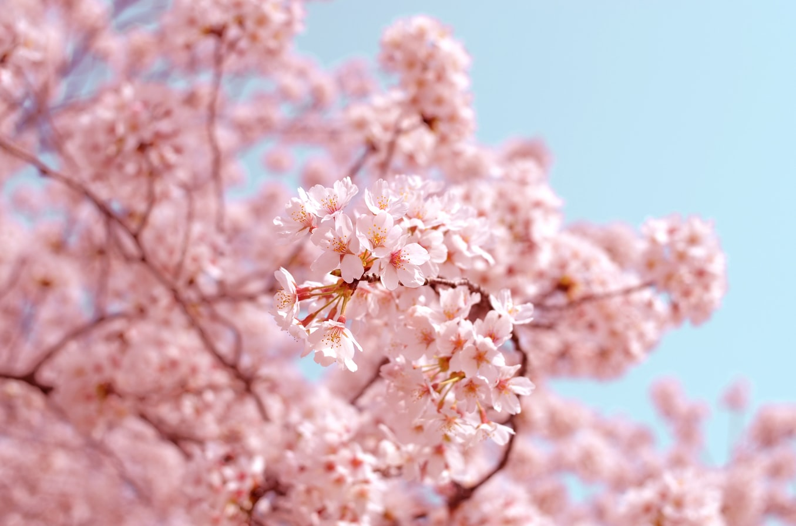

Cherry blossoms viewing
Summary
Witness the cherry blossoms that occur early April which is a beautiful sight to behold and is a very popular event to take your loved ones to spend some memorable time with them
Full Text
Japans cherry blossoms can commonly be seen in public parks or near colleges and schools. They are well known for their pink blossoms that are a popular attraction when they are fully blooming in early April.
Cherry blossoms are prettiest usually at the start of April, thats when everyone gathers around in the park for a picnic or just viewing because its something so pretty that you just want to see up close and is a great way to spend some time with your family.
The cherry blossoms symbolize the fragility and the beauty of life. Its a reminder that life is almost overwhelmingly beautiful but that it is tragically short.
I think this is rather sweet because it reminds people to enjoy their life because they will regret it otherswise when their time is coming to an end.
I've been to Hirosaki Castle park for cherry blossom viewing and in my opinion its one of the best spots to visit for viewing cherry blossoms. Its home to 2600 flowering cherry trees, more than a million visitors flood its gates each spring.
The four hundred years old Hirosaki Castle also adds to the uniqueness of this location. Visitors can rent boats and float amid fallen blossoms in the castle's moat. Hisoraski Park is only a short bus ride from JR Lines Hirosaki Station.
Author: Annie Carrol
Date: 12/11/2020